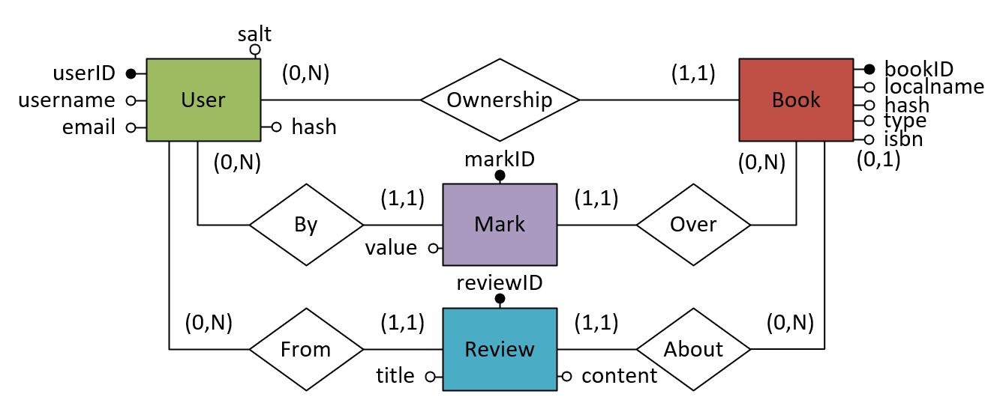
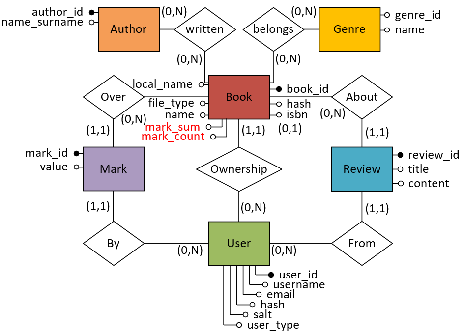

L'idea dietro a Ethib è quella di creare una applicazione web che permetta lo sharing etico di libri in formati pdf o ebook, è ammessa quindi la ricerca di testi tramite l'apposito form, il download ed anche la possibilità di lasciare una recensione testuale ed un voto. L'utente deve quindi registrarsi per caricare un libro e per lasciare recensioni, può inoltre caricare contenuti ma mantenerli privati ed accessibili tramite una url. Si prevede inoltre l'uso di API esterne che forniscano i dati di un libro a partire dal codice ISBN per rendere la pagina di un libro piena di informazioni che però l'utente non è tenuto a fornire.
Documentazione progetto di Progettazione Web
Idea
Database
Come Database si decide di usare MySQL, un RDBMS che ha una forte integrazione con il PHP, linguaggio usato per la creazione della vera e propria logica di business.
Il diagramma ER del database è:

Si decide di inserire le seguenti ridondanze per ottimizzare l'ottenimento di informazioni richieste spesso:
- mark_sum su Book: somma di tutti i voti dati ad un singolo libro
- mark_count su Book: conteggio di voti dati ad un singolo libro
Il diagramma ER finale risulta quindi essere:  L'implementazione in codice MySQL per la generazione del database è raggiungibile cliccando qui Il file Visio del diagramma ER è raggiungibile cliccando qui
Classi modello per il database
Si decide di rendere semplice l'interazione con il database creando un micro ORM con solo le funzionalità necessarie ad eseguire il ciclo CRUD.
Si inizia quindi creando una classe astratta Entity che implementi dei metodi generali save() per il salvataggio (sia insert che update) e filter_by() per il retrieve di oggetti con la possibilità di filtrare.
Questa classe prende in automatico le proprietà pubbliche delle classi che la estendono e creano automaticamente le query necessarie per l'interazione con MySQL.
Non ci basterà altro che creare classi che la estendono e ricopiarvi all'interno i nomi esatti delle colonne date alla tabella di MySQL per avere tutto mappato.
La generica connessione al database è gestita tramite l'oggetto DB che rispetta il design pattern del Singleton in modo da avere al massimo una sola connessione
attiva al database condivisa tra tutte le entità che ne avranno necessità di utilizzo.
Mockup
https://isbndb.com/apidocs/v2 https://openlibrary.org/dev/docs/api/books